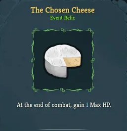

ChosenCheeseOS
Time
Hello world! I am a firm believer in The Chosen Cheese.
It is quite definitively the bestest (and cheesiest) relic in The World.
Make not any mistake, you insolent ignoramouses who idealize incongruous items, this cheese is Top Notch.

There is only one reason not to pick The Chosen Cheese--death. Other than such a reason,
The Chosen Cheese is "Chosen" over the two common card draw most nearly always!
Picking otherwise to be a contrarian is quite chuckleheaded, but I blame you not for your clownish choice.
The +1 Max HP provides such a rejuvenating effect as well as adding great survivability. Why not go for it? Dear.